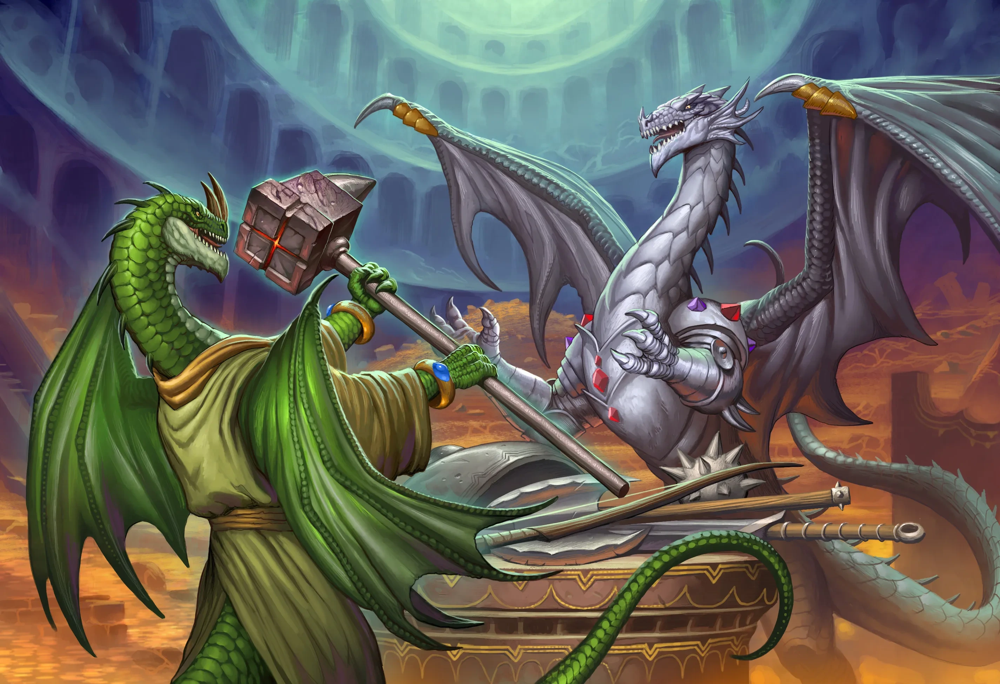

尊贵的瑞扎尼瓦什：
关于您委托我寻访的四大隐秘龙族中的最后一支――战龙，我终于收集到了充足的情报。由于他们行踪诡秘的生活方式，尽管凡人世间流传着不少传闻，想要直接搜集一手资料却比此前更为棘手。所幸正如您将看到的那样，凭借敏锐的本领外加一点点运气，我这一次依然取得了斐然的成果。战龙的秘密，此刻就在您的爪尖之上！
顾名思义，战龙为战斗而生，但他们投身战斗的缘由与方式却大相径庭：决斗龙堂堂正正地迎战劲敌以证明自我，狩猎龙潜行暗伺、为追猎的快感而锁定猎物，佣兵龙依循契约与利润而行动，狂怒龙在愤怒本能的支配下肆意宣泄，而督军龙则为了荣耀或更宏大的目标统率千军。
我们对战龙知之甚少的原因之一在于，除极少数例外，自数个世纪前的虹吸战争以来，他们便大多退出了巨龙霸主竞赛。这是一项颇为耐人寻味的动向，或许源于那场战争的余波，以及战争与当年巨龙霸主竞赛之间的交织纠葛。
借由我在这四部手稿中汇集的学识，我们已为您指定的四大隐世巨龙家族揭开了远超以往的真相――然而此事或许尚未终结。在实地考察期间，我还发掘出了更多巨龙家族的传说，他们对于度过即将到来的岁月恐怕至关重要……
我的使命业已圆满完成，这便即刻启程归来！
――永光贤者卡利赞德雷克斯
欢迎来到《Battlezoo 巨龙：战龙》！这真是一段漫长的旅程，如今卡利赞德雷克斯终于完成了使命，研习完了全部四大隐秘巨龙家族。战龙一直备受期待，我非常高兴能在此与诸位分享这部作品――本书由富有创造力且深谙历史底蕴的作者 Sen. H.H.S. 执笔，她此前曾为 Roll for Combat 与 Paizo 创作过大量精彩绝伦的内容。
正如最初的巨龙血统规则一样，扮演一条巨龙居然能与扮演其他血统的角色同样妙趣横生且保持平衡，听起来或许令人难以置信；但我深信这一版本定能不负众望――尤其是多亏了众多测试玩家的鼎力相助，他们不仅肯定了最初的设计框架，还贡献了海量绝妙构思并最终融入成书之中。你可以与其他任何种族的玩家角色并肩扮演一条巨龙而不会喧宾夺主；巨龙职业在与其他职业同场配合时，也将是一个既富乐趣又兼具平衡性的选择，其表现通常与同类职业旗鼓相当，同时也不会像那些超出游戏预期的顶尖超模构筑那样破坏平衡。
事不宜迟，让我们来看看本书都有哪些精彩内容吧！
通过本书叙述者――巨龙学者卡利赞德雷克斯撰写的历史导读，揭开战龙尘封的秘史。借由剖析战龙在历代战争中的足迹，卡利赞德雷克斯深入探讨了无论战龙有意与否，他们究竟是如何塑造周遭世界的！
这一章是献给所有玩家的重头戏。我们在本章中收录了扮演任意战龙传承角色所需的全部内容，包括血统基础规则、特殊的巨龙蹂躏者与巨龙法师范型，以及五种战龙传承各自的专属馈赠与专长。本章末尾还附有卡利赞德雷克斯为五种传承撰写的面向玩家的背景学识。尽管游戏主持人（GM）同样欢迎翻阅本节，但这些背景内容主要是为正在构思角色背景故事与文化认同的玩家量身打造的。
本章是一部怪物图鉴，收录了全部五种战龙传承在青年、成年、远古与太古阶段的数据资料，并配有面向游戏主持人的背景设定及卡利赞德雷克斯的随笔摘录。你还可以在此找到介绍各传承强大巨龙个体的边栏与正文，将他们用作战役的剧情钩子或灵感来源――其中既有出自 Sen. H.H.S. 或我本人之手的设计，也有其他巨龙爱好者的佳作。
这篇独立文章摘自卡利赞德雷克斯的研究手记，介绍了皇权龙家族的详尽资料，并收录了全部五种皇权龙血统在雏龙、青年、成年、远古与太古阶段的数据资料。附录中还包含森林龙与冥界龙的全幅巢穴地图，以及太古森林龙与太古冥界龙的详尽设定与个体传记――你可以轻松地将他们直接投入游戏之中，无论是作为主要劲敌，还是出人意料的强大盟友。毕竟哪怕对一条森林龙而言，敌人的敌人也可以成为盟友！
――马克・塞夫特（Mark Seifter），Roll for Combat
游戏设计总监
以下术语与具名角色均会在正文中结合语境加以定义与阐释，但我们也将它们集中收录于此，以便快速查阅。
永光龙 施行过永恒之光仪式的巨龙。永光龙往往过着波澜壮阔的冒险生活，并通过自身经历而非单纯依靠岁月增长来获得成长。
卡利赞德雷克斯 一位长有翠绿龙角的永光龙学者，对永恒之光仪式及永光龙怀有近乎痴迷的研究热情，同时也对尚未被人探索的广义巨龙学识抱有一定兴趣。为了开展实地考察，卡利赞德雷克斯不惜付出任何代价，乃至置自身于巨大险境之中；他已将研究成果结集出版了多部著作。他也是本书在设定世界内的作者与叙述者。
永恒之光仪式 这项神秘的仪式能让巨龙将一生的魔法潜能一次性充入体内，虽然会暂时令其体内魔力短路，却能让他们在不断突破自身极限的过程中以远超寻常巨龙的速度飞速成长。成功完成该仪式的巨龙被称为永光龙。
瑞扎尼瓦什 一位身披闪耀银鳞的强大永光龙。瑞扎尼瓦什在巨龙霸主竞赛中先是击败了自身巨龙家族的冠军，继而力挫其他所有巨龙家族的代表，成为了任期十年的巨龙霸主。这一头衔在很大程度上属于礼仪性质――因为该竞赛更像是一场竞技盛会，而非真正意义上的龙族政治运作――但它依然赋予了瑞扎尼瓦什为这十年倡议行动方针的资格，并能让相当数量的巨龙至少考虑协助践行这一目标。就瑞扎尼瓦什而言，她致力于寻访世界各地隐世不出的巨龙家族，并将他们称为“隐秘巨龙”。
传统派巨龙 未曾施行永恒之光仪式的巨龙。传统派巨龙通常更严格地遵循其所属传承的龙族习俗（对许多巨龙而言，这包括搜集宝库并在守护宝库的同时沉睡休憩）。
古元教 一种崇敬二十种元素显化的古老元素宗教。